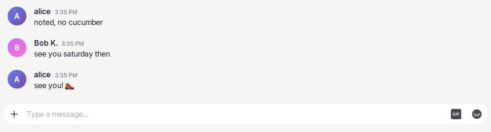
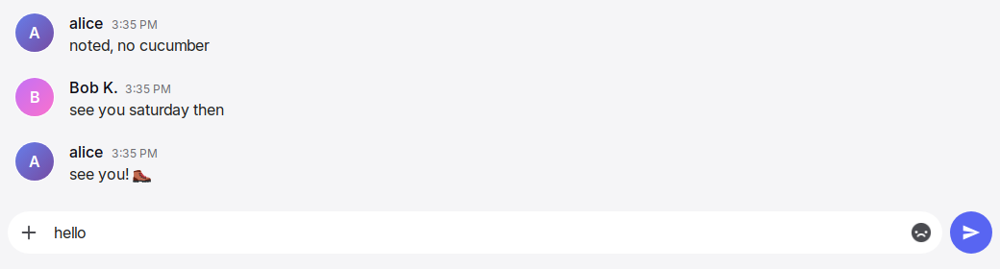
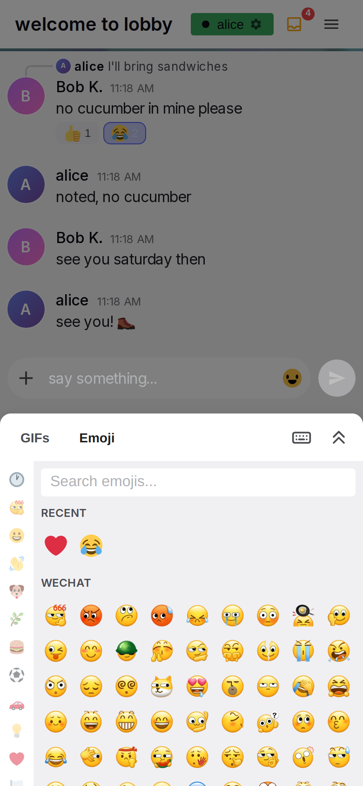

Input box
The input box is the part of a conversation where the user writes and sends a message. It is at the bottom of every conversation, room or direct message. It accepts text, emoji, GIFs, images, videos and voice messages. It shows who is typing in the conversation and which message the user replies to. Each action in the box takes effect immediately. No action in the box waits for the server.
Anatomy



- Typing strip. An 18 px band above the box that shows who is typing in this conversation. When nobody types, the strip is empty and keeps its height, so the box does not move.
- Reply bar. A bar with "Replying to" and the name on the left, and ✕ on the right. It shows only while the user writes a reply. It is directly above the pill and makes one block with it.
- The pill. A rounded field with 22 px corners, in the theme's input colour. It contains +, the text area and the two toggles, and the tray above them while files wait. The band around the pill is transparent, so only the pill has colour.
- + (attach). A button on the left side in the pill. It opens a menu with "Photo or video" and "Voice message". Photo or video opens the file chooser, and the chosen files go to the tray. Voice message starts the recorder.
- Tray. A line of square thumbnails above +, inside the pill, for the files that wait for Send. Each thumbnail has ✕ in its corner. The tray shows only while it has a file.
- Text area. The field for the draft text. It starts as one line, grows with the text up to 200 px, then scrolls.
- GIF toggle. A small badge with the text "GIF", on desktop only. It collapses while the draft has text.
- Emoji toggle. A button with a grey silhouette of a random emoji. It changes to full colour on hover and while its picker is open.
- Send. A button with a paper plane icon, outside the pill on its right side. It is hidden while the draft and the tray are empty and no picker is open.
- Read-only bar. A bar that replaces parts 2 to 9 in a room where the user has no permission to write.
- Pickers. The emoji picker and the GIF picker. They open from the toggles, above them on desktop and as one bottom sheet on a phone. The pickers page specifies their content.
- Recorder. The pill while a voice message records: a trash button, a red dot, the elapsed time and the bars of the sound level. It takes the place of +, the text area and the toggles. Send stays.
Rules
Layout and look
IB-01The input box is the last block of the conversation column, under the message list, on every conversation page.
IB-02The pill has 22 px corners and the theme's input colour. The band around the pill stays transparent. A theme may draw a 1 px ring around the pill, in one colour or in a gradient (Ocean, Sunset, Aurora and Neon Glow do). The ring is dim while the text area has no focus and full while it has the focus. The ring adds no size to the pill. Why: a coloured band takes attention from the message list. One theme had a coloured band, and it was removed. The ring is a small touch that is specific to a theme, the way a selected browser tab has a lit border.
IB-03The pill contains these items, from left to right: +, the text area, the GIF toggle, the emoji toggle. While files wait, the tray is a line above them, across the pill (IB-33). Send is outside the pill, with an 8 px gap. All items align to the bottom edge, so the buttons stay in place when the text grows.
IB-04The text area starts as one line and is at least 44 px high. It grows with its content up to 200 px, then scrolls without a visible scrollbar. A word that is too long for one line wraps to the next line inside the box.
IB-05After a send, the text area immediately returns to one line.
IB-06On desktop, the +, GIF, emoji and Send buttons are 44 px circles. On a phone, they are 40 px.
IB-07On a phone, the draft text is always 16 px. The user's text size setting does not change it. On desktop, the draft text uses the text size setting. Why: iOS zooms the page when a field with smaller text gets focus.
IB-08The phone layout applies when the window is 600 px wide or less. Only the window width selects the layout. The device type has no effect.
IB-09While the reply bar is visible, the top corners of the pill are square. The bar is directly above the pill with no gap, so the bar and the pill look like one block.
Typing text
IB-10Keystrokes, deletions and pastes change the box immediately. No action in the box waits for the server. See General rules.
IB-11On a device without touch input, Enter sends the message and Shift+Enter inserts a newline. Enter does nothing when the draft is empty or contains only whitespace.
IB-12On a device with touch input, Enter inserts a newline. Only the Send button sends the message.
IB-13While an input method editor composes a character (for example, Japanese or Chinese input), Enter goes to the editor. Enter does not send the message.
IB-14A message contains at most 4000 characters. The box does not accept more characters. When a paste goes over the limit, the box cuts the pasted text at the limit.
IB-15A paste of text works as a normal paste. A paste of images or videos puts them in the tray (see IB-29 to IB-37). In that case, no text from the clipboard is pasted. The box ignores pasted files of other kinds.
IB-16In a direct message, the placeholder is "Message @{username}". In a room, the placeholder is one random text from the configured list. The box selects it when the conversation opens. The text does not change until the user leaves the conversation. The placeholder is never empty.
IB-17Escape closes the topmost open layer: a dialog if one is open, otherwise a picker. Escape never clears the draft and never cancels a reply.
Send
IB-18Send is hidden while the draft is empty, the tray is empty and no picker is open. It collapses in 0.15 s, and the pill becomes wider to fill its space. "Empty" means that the draft has no characters. A single space makes the button visible.
IB-19When the draft has text, Send has the accent colour and a white icon. A theme can add a soft glow to Send. No other control in the chat has a glow.
IB-20When a picker is open, the draft is empty and the tray is empty, Send is visible and dimmed. Why: the user sees that Send is the next step after a pick.
IB-21Send is never disabled. When the draft contains only whitespace and the tray is empty, a tap on Send sends nothing and does not change the draft.
IB-22A tap or click on Send never moves focus. An open phone keyboard stays open, and a closed phone keyboard stays closed. Why: a focus move at this point closes the picker during the tap, and it opens the keyboard after every send.
IB-23On a phone, when the user picks emoji with the sheet open, the first tap on Send sends the message.
IB-24A send takes effect immediately, before the server answers. The draft is cleared. The text area shrinks to one line. An open picker closes. A pending copy of the message appears at the end of the list, and the list scrolls to it. Text that the user types immediately after a send goes into the empty box.
IB-25The pending message is a full message row, faded, at the end of the list. It becomes a normal row when the server accepts it. The message row page specifies how it looks.
IB-26When a message cannot be sent, its row shows as failed, with the reason, Retry and Remove. Remove deletes the message from this device only.
IB-27A send while the reply bar is open sends a reply. The bar closes immediately.
IB-28Messages sent quickly one after another appear in the order they were sent. A message with files appears when its last file is uploaded. The user can send more messages while files upload, and a text sent after a message with files can appear before it.
Attachments
IB-29+ opens a menu with two items, "Photo or video" and "Voice message" (IB-67). Photo or video opens the system file chooser for images and videos. The user can choose several files in one selection. On a phone, the chooser offers the camera and the photo library. The chosen files go to the tray (IB-33). + stays visible while the user types.
IB-30Files dropped on the input box go to the tray in the same way. While the user drags a file (not text) over the box, the box shows "Drop images here" and an accent ring. The ring disappears on a drop, when the drag leaves the box, and when the drag is cancelled. A drop anywhere else does nothing, and the browser does not open the file.
IB-31The accepted types are images (.jpg, .jpeg, .png, .gif, .webp) and videos (.mp4, .webm, .mov, .avi, .mkv). The box ignores dropped or pasted files of other kinds. When the user chooses a file of another kind with +, the dialog of IB-35 lists it as unsupported, and the file does not go to the tray.
IB-32The maximum size of one file is the configured size limit. The default limit is 100 MB. A picture has at most 50 megapixels. The server refuses a picture with more, and the failed row gives the reason (IB-35). A GIF file has the same limit, in a message and in a GIF library. One message contains at most 10 files. A pick that takes the tray over 10 files is refused, and no file of that pick goes to the tray. The refusal text is "Choose at most 10 files."
IB-33Chosen, dropped and pasted files wait in a tray inside the input box, above the draft. Each file shows as a square thumbnail, 72 px on desktop and 64 px on a phone, with ✕ in its top right corner. A video shows its first frame and a play mark. ✕ removes the file from the tray. On a phone, the tray scrolls sideways. Send sends the files of the tray and the draft text together, as one message. The text is the caption of the message (MR-24). Send is visible while the tray has a file, and on desktop Enter sends with an empty draft. Nothing is uploaded before Send. Each conversation has its own tray. The tray does not survive a reload. A GIF file becomes a GIF attachment, the same as a GIF sent from the picker.
IB-34While files upload, the pending row shows the caption when there is one, one square thumbnail for each file as in the tray (IB-33), and "Cancel upload". Each thumbnail shows the state of its file. A file that waits is dimmed. A file that uploads has a bar along its bottom edge. A file that is uploaded has a check mark. A file that the server refused has a warning mark. The thumbnail's tooltip gives the file name and the state, or the reason of the refusal. At most three files upload at the same time, counted over all pending messages. The other files wait, in the order they were sent. A pending voice message shows one progress bar and no thumbnail. Cancel removes the pending message and discards the data already uploaded for it. Nothing is sent.
IB-35One dialog reports all files of a pick that are refused (wrong kind, too large, too many). The dialog title is "No file added" when no file remains, and "{s} of {t} files added" when some files remain. The dialog has one line for each refused file. The remaining files go to the tray. A failure during the upload itself shows in the timeline instead. When the server refuses every file of a message, the pending row shows as failed, with Retry and Remove. When the server refuses some of the files, the message is sent with the other files. The refused files stay as a failed row of their own, with one reason line for each file, Retry and Remove. Retry sends them as a new message. The user closes the dialog with "Got It", with ✕ or with a tap outside it. The dialog does not move focus and never closes the keyboard.
IB-36A send with files during a reply is a reply, as in IB-27. The reply bar closes.
IB-37The user can pick the same file again immediately after a pick.
The pickers, seen from the box
IB-38A tap on the emoji toggle or the GIF toggle opens its picker immediately. This is also true for the first tap of the session.
IB-39On desktop, the GIF toggle collapses while the draft has text. The emoji toggle stays visible. Why: a GIF is a separate message, and the user cannot add it to a text.
IB-40On desktop, a picker opens above the toggle group, right-aligned, with an 8 px gap. The rest of the page stays visible. A tap anywhere outside the picker closes it.
IB-41On a phone, there is no GIF toggle. The emoji toggle opens one bottom sheet with two tabs, "GIFs" and "Emoji". The Emoji tab is active first. The sheet takes the place of the phone keyboard: the keyboard closes, and the sheet has the height that the keyboard had the last time it was open on this device. Before the first time, the sheet height is half the screen height, at most 400 px. The box moves up to the top edge of the sheet. Everything else is dimmed to half, except the draft text, the sheet and Send. The sheet keeps its last tab until the page reloads. Why: with the same height, the box does not move when the sheet and the keyboard change places.
IB-66At the right end of the tab row of the sheet are a keyboard button and a button with two chevrons that point up. The keyboard button closes the sheet and puts the focus in the draft, so the keyboard opens in the place of the sheet. The chevrons make the sheet fill the whole screen; the box and Send are not visible. The chevrons then point down and return the sheet to its first height. A GIF pick at full height sends and closes the sheet, as IB-47 says. The sheet opens at its first height every time.
Voice messages
IB-67+ opens a menu above + with two items: "Photo or video" and "Voice message". On a phone, the menu is a bottom sheet over a dimmed page, as the More menu of a row is. Photo or video closes the menu and opens the file chooser (IB-29). Voice message closes the menu and starts the recorder (IB-68). A tap outside the menu, or Escape, closes the menu and does nothing else. The menu does not move focus, so an open keyboard stays open. A browser that cannot record shows Photo or video alone.
IB-68The recorder asks for the microphone the first time. When the browser refuses it, a dialog shows "Microphone unavailable" and "Yap cannot use the microphone. Allow it in the browser settings and try again.", and nothing records. While a voice message records, the recorder takes the place of +, the text area and the toggles in the pill: a trash button on the left, a red dot that pulses, the elapsed time as m:ss, and bars that show the sound level of the last seconds. Send stays visible and bright. The draft text and the tray are kept, and show again when the recording ends. On a phone, the keyboard closes when the recording starts.
IB-69Send ends the recording and sends it. The trash ends the recording and discards it. A recording ends by itself after 5 minutes and is sent. A recording shorter than one second is discarded, and the box shows "Too short" for two seconds. When the user leaves the conversation while recording, the recording is discarded. When the system takes the microphone away, for example for a call, the recording ends and what was recorded is sent.
IB-70A voice message is a message of its own, without text and without other files. When the reply bar is open, it is sent as a reply and the bar closes. It appears at once as a pending row with a player that plays the recording (MR-76), and becomes a normal row when the server accepts it. Without a connection, it is accepted and sent later, as a file is (IB-63). The author cannot edit a voice message. The author can delete it.
IB-71A server without the audio converter cannot take voice messages. The + menu still shows "Voice message", and the recorder works as usual. After Send, the pending row shows "Failed" and a reason (MR-71). The reason names the file and the server's text "Voice messages are unavailable on this server (ffmpeg missing)". When the converter fails on one recording, the reason is "Could not process this voice message" after the file name. "Retry" sends the recording again, for a server that got its converter meanwhile.
IB-42While a picker is open: a tap on + only closes the picker, and the file chooser does not open. A tap on the other toggle only closes the picker. A tap on the toggle of the open picker closes the picker. A tap on the draft puts focus on the draft and closes the picker with the same tap. A tap anywhere else closes the picker.
IB-43A picker also closes on a send, on a GIF pick, when the conversation changes, when the window width crosses 600 px, and on Escape.
IB-44An emoji pick inserts the emoji into the draft at the caret. If the draft was never focused, or the conversation changed since, it goes to the end. If text is selected, the emoji is inserted before the selected text. The text stays but is no longer selected, and the caret is after the emoji. The pick does not move focus. The picker stays open. The pick counts as typing and updates the user's recent emoji. Several picks insert the emoji one after another. A custom pack emoji inserts its shortcode text, for example ":name:". On a phone, a pick while the sheet fills the screen returns the sheet to its first height, so the draft shows again.
IB-45In its idle state, the emoji toggle shows a grey silhouette of a random emoji. Each time the mouse pointer moves onto the toggle, the toggle shows a new random emoji in full colour. The silhouette then shows the same emoji. The toggle stays in colour while its picker is open.
IB-46The GIF toggle is a 22 px badge with the text "GIF". It becomes brighter on hover and while its picker is open.
IB-47A pick of a GIF card immediately sends the GIF as a separate message. The picker closes. A faded pending row with the GIF appears at the end of the list, and the list scrolls to it. The draft text does not change. When the reply bar is open, the GIF is sent as a reply, and the bar closes. A tap on the star of a card changes only the favourite state.
IB-48When the emoji picker opens again, its search is empty and its recent emoji are up to date. The GIF picker keeps its tab and folder.
Reply bar
IB-49Reply on a message shows the reply bar. The bar shows "Replying to" and the author's display name, or the username when there is no display name. ✕ is on the right. A long name is cut with an ellipsis. The row that the user replies to has an accent tint while the bar is open.
IB-50Reply moves focus into the draft in the same tap, so a phone keyboard opens. Reply and a tap on the draft are the only actions that do this.
IB-51✕ closes the bar and does not move focus.
IB-52The reply target is part of the draft of its conversation. It is kept with the draft (IB-53). A send clears it.
Drafts
IB-53Each conversation has its own draft and reply target. When the user leaves a conversation and comes back, the draft shows again. Drafts stay after a reload and after the app is opened again.
IB-54Drafts stay on the device. No part of a draft goes to the server before Send.
IB-55When the user signs out, all drafts on the device are deleted. See Sign-in and sessions.
IB-56When a room becomes read-only while the user types, the read-only bar replaces the box. The draft is kept. It shows again when writing is allowed again.
Focus
IB-57Focus does not move into the draft on page load or when the conversation changes. Why: on a phone, focus on the draft opens the keyboard, and the keyboard covers the messages that the user wants to read.
IB-58Only a tap on the draft, Reply and the keyboard button of the phone sheet move focus into the draft. Emoji picks, Send, ✕, picker toggles and dialogs never move focus. On a phone, the emoji toggle takes the focus out of the draft, so that the keyboard closes and the sheet takes its place.
Who is typing
IB-59Other people see the user as typing from the first non-blank keystroke, paste or emoji pick. The typing state ends 3 s after the last of these inputs, when the draft becomes blank, on a send, when the user leaves the conversation, when the tab becomes hidden, or when the connection is lost.
IB-60The typing strip shows who types in this conversation. In a direct message, the text is "{name} is typing...". In a room, the text is a random text from the configured list for one person, for two people, or for more people. The user's own name never shows. The text is small and grey, with three bouncing dots before it.
IB-61The typing strip also shows in a read-only room, because people with permission can write in it.
No permission, no connection
IB-62In a room where the user has no permission to write, the read-only bar replaces the reply bar and the box. The read-only bar shows a lock icon and "You do not have permission to send messages in this channel". The user can always write in a direct message. A permission change applies immediately to the open room.
IB-63Without a connection, the box works as usual for typing, emoji, pickers and drafts. Send accepts the message and shows it as pending. A GIF pick and a file pick are accepted in the same way. The message is sent when the connection comes back, also after the app is closed and opened again. See Offline and installation.
IB-64Without a connection, the tray holds files up to 25 MB in total. The box refuses a pick that goes over this, and a send of a tray that is over it, and shows "Needs a connection".
IB-65When a pending message waits for more than one day, it shows as failed, with Retry and Remove.
States
| State or trigger | Input | What the user sees |
|---|---|---|
| Empty draft, no picker | all | Placeholder in the pill. Send hidden. GIF badge and grey emoji icon visible (desktop); + and emoji icon (phone). |
| First character typed | keyboard, touch | Send appears in 0.15 s. On desktop, the GIF toggle collapses. |
| Draft deleted to empty | keyboard, touch | Send collapses, or stays dimmed while a picker is open. The GIF toggle shows again. |
| Whitespace only | keyboard, touch | Send visible and bright. A tap sends nothing, and the spaces stay. |
| Four lines | keyboard | The pill is taller. +, the toggles and Send stay at the bottom edge. |
| More than 200 px of text | keyboard | The text area stops growing and scrolls. No scrollbar. |
| Enter | keyboard, no touch | Sends. Empty or whitespace: nothing. |
| Shift+Enter | keyboard | Newline. |
| Enter | touch device | Newline. |
| Enter while composing (IME) | keyboard | Goes to the input method editor. |
| Escape | keyboard | Closes the topmost layer: a dialog, otherwise a picker. Draft and reply unchanged. |
| Send tap or click | mouse, touch | Draft cleared, box one line, picker closed, pending row at the end of the list, list scrolled. Focus unchanged. |
| Send accepted | all | The pending row becomes a normal row. |
| Send failed | all | The row shows the reason, Retry and Remove. |
| Hover emoji toggle | mouse | The silhouette changes to a random emoji in colour. |
| Emoji toggle tap, empty draft | mouse, touch | Picker opens immediately. Send visible and dimmed. Phone: sheet, dimmed page, box directly above the sheet. |
| Emoji toggle tap, keyboard open | touch | The keyboard closes. The sheet opens in its place, with the height of the keyboard. The box stays where it was. |
| Keyboard button tap in the sheet | touch | The sheet closes. The keyboard opens in its place. Focus in the draft. |
| Chevrons tap in the sheet | touch | The sheet fills the screen. The box and Send are not visible. The chevrons point down. A second tap returns the sheet to its first height. |
| Emoji picked at full height | touch | Emoji at the caret. The sheet returns to its first height. |
| Emoji picked | mouse, touch | Emoji at the caret. Send bright. Picker stays open. The draft's focus unchanged; a keyboard open for the picker's search closes. |
| Send tap with the sheet open | touch | Sends on the first tap. Sheet closes. Keyboard unchanged. |
| GIF toggle tap, empty draft | mouse | GIF picker opens, badge bright. |
| GIF card tap | mouse, touch | Picker closes, faded GIF row at the end of the list. |
| Tap on + with a picker open | mouse, touch | Picker closes. The menu does not open. |
| Tap on + | mouse, touch | The menu with Photo or video and Voice message. Phone: a bottom sheet over a dimmed page. |
| Photo or video | mouse, touch | The menu closes. The file chooser opens. |
| Voice message, first time | mouse, touch | The browser asks for the microphone. |
| Voice message, microphone refused | all | Dialog "Microphone unavailable". The pill is unchanged. |
| Recording | all | Trash, red dot, time and bars in the pill. Send bright. Phone: keyboard closed. |
| Send while recording | mouse, touch | The recording ends. A pending row with the player at the end of the list. The draft shows again. |
| Trash while recording | mouse, touch | The recording is discarded. The draft shows again. |
| 5 minutes recorded | all | The recording ends and is sent. |
| Recording shorter than 1 s | all | Discarded. "Too short" at the box for 2 s. |
| Voice message sent, server without the audio converter | all | The pending row shows "Failed", the reason, "Retry" and "Remove". |
| Tap on the other toggle with a picker open | mouse | Picker closes. The other picker does not open. |
| Tap on the draft with a picker open | mouse, touch | Draft focused and picker closed with one tap. |
| Conversation changed | all | Picker closed. The draft and reply bar of the new conversation appear. |
| Reply on a message | mouse, touch | Bar "Replying to {name}" above the pill, row tinted, draft focused. |
| ✕ on the reply bar | mouse, touch | Bar and tint disappear. Focus unchanged. |
| File dragged over the box | mouse | "Drop images here" and the accent ring. |
| File dropped outside the box | mouse | Nothing. |
| Files chosen, dropped or pasted | all | The files appear in the tray. Nothing is sent. Draft text unchanged. |
| Send with files in the tray | all | One pending row with the caption, the file names, a progress bar and "Cancel upload". The tray and the box empty. |
| Some files of a pick refused | all | Dialog "{s} of {t} files added" with one line for each refused file. The other files go to the tray. |
| All files of a pick refused | all | Dialog "No file added" with one line for each file. |
| Upload fails midway | all | The pending row shows Failed, the reason, Retry and Remove. |
| Room becomes read-only | all | Lock icon and the read-only text replace the box. Draft kept. |
| Someone types in the conversation | all | Typing strip text with three dots. It disappears 3 s after their last keystroke. |
| No connection | all | Box unchanged. Send shows a pending row, and the message is sent later. The header shows the connection state. |
| No connection, a pick over 25 MB | all | The pick is refused. The box shows "Needs a connection". |
Wording
| Where | Text |
|---|---|
| + tooltip and accessible name | "Upload files" |
| + menu | "Photo or video"; "Voice message" |
| Recorder trash tooltip and accessible name | "Discard recording" |
| Recorder time | m:ss, from "0:00" |
| Microphone dialog | "Microphone unavailable"; "Yap cannot use the microphone. Allow it in the browser settings and try again." |
| Recording too short | "Too short" |
| Voice message refused, the reason in the failed row ({ext} is webm, ogg or mp4, by the browser) | "voice.{ext}" — Voice messages are unavailable on this server (ffmpeg missing); "voice.{ext}" — Could not process this voice message |
| Picture refused for its pixels, the reason in the failed row | "{name}" — Picture has too many pixels ({width} x {height}, max 50 megapixels) |
| Pending voice row, in place of a file name | "Voice message" |
| Tray ✕ accessible name | "Remove {file name}" |
| GIF badge | "GIF" |
| GIF toggle tooltip and accessible name | "GIF picker" |
| Emoji toggle tooltip and accessible name | "Emoji picker" |
| Send tooltip and accessible name | "Send message" |
| Reply bar ✕ accessible name | "Cancel reply" |
| Room placeholders (configured list; these are the defaults) | "say hi...", "sup...", "spill the tea...", "say something...", "drop a hot take...", "type your truth...", "go off...", "send it..." |
| Placeholder when the list is missing | "Type a message..." |
| Placeholder when the picked text is empty | "Say something…" |
| Direct message placeholder | "Message @{username}" |
| Reply bar | "Replying to " followed by the name in bold; "✕" |
| Read-only bar | "You do not have permission to send messages in this channel" |
| Drop hint | "Drop images here" |
| Pending row with files | "Cancel upload" |
| Failed row | "Failed", the reason, "Retry", "Remove" |
| Upload dialog titles | "No file added"; "{s} of {t} files added" |
| Upload dialog lines, one per file | "{name}" — unsupported file type; "{name}" — too large ({size} MB, max {max} MB) |
| Upload dialog, too many files | "Choose at most 10 files." |
| Dialog buttons | "Got It"; "✕" |
| GIF dialog title | "Couldn't send GIF" |
| GIF dialog texts | "File is too large (max 50MB)"; "Could not process this file as a GIF"; "Upload failed" |
| Phone sheet tabs | "GIFs", "Emoji" |
| Phone sheet buttons | "Keyboard", "Full height" |
| Typing, direct message | "{name} is typing..." |
| Typing, one person in a room (configured; defaults) | "{0} is cooking..", "{0} boutta drop heat..", "{0} typing their villain arc..", "{0} lowkey struggling..", "{0} channeling their inner poet..", "{0} manifesting a message..", "{0} is in their typing era.." |
| Typing, two people (configured; defaults) | "{0} and {1} are cooking..", "{0} and {1} causing chaos..", "{0} and {1} boutta spam..", "{0} and {1} racing fr fr..", "{0} and {1} typing faast.." |
| Typing, three or more (configured; defaults; {0} the first name, {1} the number of others) | "{0}, {1} and more going crazy..", "chat's popping off: {0}, {1} + others..", "{0} and {1} causing chaos..", "typing apocalypse: {0}, {1} and more..", "{0} and {1} others said bet..", "everyone typing their hot takes.." |
| Typing when the lists are missing | "{0} is typing..", "{0} and {1} are typing..", "{0} and {1} others are typing.." |
| No connection, too much to queue | "Needs a connection" |
Related
- General rules for acting locally first.
- Emoji and GIF pickers for the content and behaviour of the pickers.
- Message row and actions for the pending and failed rows, Reply, and editing.
- Timeline and media for scrolling after a send and the behaviour when the keyboard opens.
- Presence for how typing is shown to others.
- Offline and installation for sending without a connection.
- Sign-in and sessions for what signing out removes from the device.